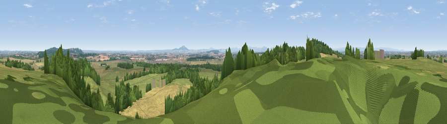

Viewpoint near Acton Reynald
#5826 in England · top 20% of its area beats it · near Acton Reynald · path 135 mWhere it is
The exact computed spot (SJ 53000 24075). Click the marker for map links.
Public access: the nearest public right of way is about 135 m away — the final stretch may cross private land. Computed from Natural England's CRoW access layer and OpenStreetMap rights of way — not the legal definitive map. Always verify locally.
The view, rendered

A 360° render of this exact spot computed from the terrain model, tree cover and land cover — summer colours, afternoon light, calibrated against photographs of famous viewpoints. Real trees, hedges and buildings will differ in detail.
The panorama
Grey silhouette: terrain skyline in each direction (720 bearings, Earth curvature and refraction included). Dashed green: skyline with trees (+15 m) and buildings (+8 m) as obstacles. Blue strip: how far the ground is visible on each bearing.
Where the view opens
Wedge length = distance to the farthest visible ground on that bearing (vegetation-aware). Rings at 10, 25 and 50 km.
What fills the view
38% grassland · 34% woodland · 28% cropland · 1% built-up
Angular shares of the visible panorama (visual magnitude), not map area. Landscape diversity 0.50 (0–1 Shannon).
Key numbers
More beautiful places nearby
The staircase of upgrades: each row has a higher view potential than everything closer. Driving times are estimates from straight-line distance, calibrated against real road routing — check an actual route before setting out.
| Place | Direction | Drive | Score |
|---|---|---|---|
| Grinshill | WSW · 1 km | ~3 min | 75.2 |
| Viewpoint near Marchamley | ENE · 7 km | ~15 min | 77.5 |
| The Ercall | SE · 18 km | ~32 min | 79.4 |
| Viewpoint near Little Wenlock | SE · 19 km | ~32 min | 84.2 |
| The Wrekin | SSE · 19 km | ~32 min | 85.0 |
| Viewpoint near Little Wenlock | SSE · 19 km | ~32 min | 86.6 |
| North Hill | SSE · 81 km | ~105 min | 86.8 |
| Worcestershire Beacon | SSE · 82 km | ~106 min | 87.1 |
52.81216, -2.69874 · source: screening · position refined by local search. Computed location — check access rights before visiting.